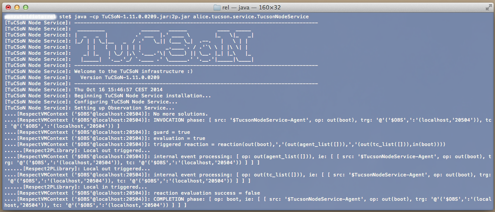

In this brief "how-to", you will learn how to get TuCSoN, build it and run examples showcasing its features.
Assumptions are you are familiar with Java (compilation), Git (cloning repositories) and, optionally, ANT (buildfiles).
1.1 Downloading
1.2 Compiling
1.3 Deploying
1.4 Running
If you want the ready-to-use distribution of TuCSoN, download TuCSoN-1.11.0.0209.jar archive from the "Downloads" section, here > http://bitbucket.org/smariani/tucson/downloads. TuCSoN_boot.sh bash script is also available for quick boot of TuSCoN components and examples.
If you want the source code of TuCSoN, clone the TuCSoN Git repository hosted here on Bitbucket, at > http://smariani@bitbucket.org/smariani/tucson.git (e.g., from a command prompt type $> git clone https://smariani@bitbucket.org/smariani/tucson.git) [1].
In the former case, skip to the "Running" section below. In the latter case, keep reading.
By cloning TuCSoN you have downloaded a folder named tucson/, with the following directory structure:
tucson/
|__...
|__TuCSoN/
|__...
|__ant-scripts/
|__build.xml
|__environment.properties
|__eclipse-config/
|__how-to/
|__license-info/
|__trunk/
|__src/
TuCSoN depends on 1 other Java library to function properly [2]:
Once you got the above libraries, you are ready to compile TuCSoN source code.
The easiest way to do so is by exploiting the ANT script named build.xml within folder ant-scripts/, which takes care of the whole building process for you, from compilation to deployment (covered in next section). To do so, you need to have ANT installed on your machine [3]. If you don't want to use ANT, build TuCSoN jar archive using the tools you prefer, then skip to the "Running" section below.
To compile TuCSoN using ANT:
Edit the environment.properties file according to your system configuration:
1.1 Tell ANT where your JDK and your java tool are
1.2 Tell ANT which libraries are needed to compile TuCSoN (the one you just downloaded, that is tuProlog)
1.3 Tell ANT where you put such libraries (e.g. if you put them into TuCSoN/libs/ you are already set)
[1.4 Tell ANT your Bitbucket username (for automatic syncing with TuCSoN repository, not supported at the moment)]
Launch the ANT script using target compile (e.g., from a command prompt position yourself into the ant-scripts/ folder then type $> ant compile) [4]. This will create folder classes/ within folder TuCSoN/ and therein store Java .class files.
Other ANT targets are available through the build.xml file: to learn which, launch the ANT script using target help.
Deploying TuCSoN is as simple as giving a different build target to the ANT script build.xml:
if you only want the TuCSoN jar archive, ready to be included in your Java project, launch the script using target lib. This will compile TuCSoN source code into binaries (put into TuCSoN/classes/ folder) then package them to TuCSoN-1.11.0.0209.jar into TuCSoN/lib/ folder [5].
if you want a ready-to-release distribution of TuCSoN, including also documentation and support libraries, launch the script using target dist. This will:
TuCSoN/classes/ folderTuCSoN/lib/ folderTuCSoN/doc/ foldercreate folder rel/TuCSoN-1.11.0.0209 including:
docs/ including the generated Javadoc information as well as this "how-to"libs/ including tuProlog library used to build TuCSoNrel/ including TuCSoN jar archivesThe complete directory structure obtained by launching ant dist build process should look like the following (assuming you put tuProlog library in folder TuCSoN/libs/):
tucson/
|__...
|__TuCSoN/
|__...
|__ant-scripts/
|__build.xml
|__environment.properties
|__classes/
|__doc/
|__eclipse-config/
|__how-to/
|__rel/
|__TuCSoN4JADE-1.0/
|__docs/
|__how-to/
|__javadoc/
|__libs/
|__rel/
|__...
|__lib/
|__libs/
|__license-info/
|__trunk/
|__src/
Other ANT targets are available through the build.xml file: to learn which, launch the ANT script using target help.
To run TuCSoN, you need:
Supposing you built TuCSoN using the provided ANT script [6] and that you are comfortable with using a command prompt to launch Java applications [7]:
TuCSoN/lib/ or TuCSoN/rel/TuCSoN-1.11.0.0209/rel/ folderlaunch the TuCSoN Node service, e.g. as follows [8]:
java -cp TuCSoN-1.11.0.0209.jar:../libs/2p.jar alice.tucson.service.TucsonNodeService
The TuCSoN ASCII logo on the command prompt, as depicted below.

As long as no TuCSoN agents start exploiting TuCSoN coordination services, nothing happens. Thus, here follows instructions on how to launch one of the example applications shipped within TuCSoN-1.11.0.0209.jar, showcasing its features: the old-but-gold "Dining Philosophers" example (package alice.tucson.examples.timedDiningPhilos.TDiningPhilosophersTest).
Supposing you successfully launched the TuCSoN Node Service as described above, to launch the "Dining Philosophers" example:
TuCSoN/lib/ or TuCSoN/rel/TuCSoN-1.11.0.0209/rel/ folderlaunch the "Dining Philosophers" example, e.g. as follows [8]:
java -cp TuCSoN-1.11.0.0209.jar:../libs/2p.jar alice.tucson.examples.timedDiningPhilos.TDiningPhilosophersTest
You should see many prints on the command prompt, tracking what the philosophers are doing.
Author of this "how-to":
Authors of TuCSoN in TuCSoN "People" section of its main site, here > http://apice.unibo.it/xwiki/bin/view/TuCSoN/People
[1] Git standalone clients are available for any platform (e.g., SourceTree for Mac OS and Windows). Also, if you are using Eclipse IDE for developing in JADE, the EGit plugin is included in the Java Developers version of the IDE.
[2] Recommended tuProlog version is 2.9.1. Others (both newer and older) may work properly, but they have not been tested.
[3] Binaries available here, installation instructions covering Linux, MacOS X, Windows and Unix systems here.
[4] If you are using Eclipse IDE for developing in Java, ANT is included: click "Window > Show View > Ant" then click "Add buildfiles" from the ANT view and select file build.xml within ant-scripts/ folder. Now expand the "TuCSoN build file" from the ANT view and finally double click on target compile to start the build process.
[5] Actually, also a TuCSoN-1.11.0.0209-noexamples.jar is built. It is the same as TuCSoN-1.11.0.0209.jar except for the explanatory examples in package alice.tucson.examples.*, which are excluded.
[6] If you directly downloaded TuCSoN jar or if you built it from sources without using the provided ANT script, simply adjust the given command to suit your configuration.
[7] If you do not want to use the command prompt to launch Java applications, adjust the given command to suit your configuration, e.g., if your are using Eclipse IDE: right-click on "TuCSoN-1.11.0.0209.jar > Run As > Run Configurations..." then double-click on "Java Application", finally select "TucsonNodeService - alice.tucson.service" as the main class (-cp TuCSoN-1.11.0.0209.jar:../libs/2p.jar is automatically added by Eclipse according to project's build path settings).
[8] Separator : works on Mac & Linux only, use ; on Windows.
[9] Actually, a TuCSoN agent identifier can be any valid tuProlog ground term. See tuProlog documentation, here.